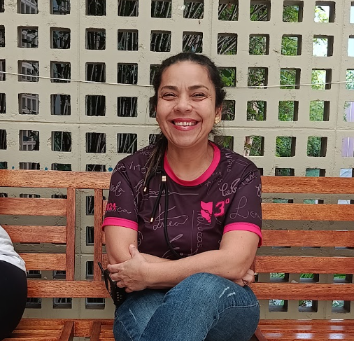

Fabiana Aparecida Marcelo Nunes
Sobre sua trajetória
Presente desde a entrada até a saÃda dos estudantes, a inspetora inspira pela dedicação diária, pela força de sua história pessoal e pelo cuidado atento com cada aluno. A história de Fabiana Aparecida Marcelo Nunes com a rede SESI não começou no exercÃcio da profissão. Teve inÃcio nos tempos de estudante, na unidade de Valinhos, quando o desejo de trabalhar no ambiente escolar começou a ganhar força. “Eu era aluna e ficava pensando: ‘nossa, que legal, queria trabalhar em escola’. Eu me oferecia para ajudar, ia cedinho para organizar as carteiras. Começou assimâ€, relembra. Hoje, com sete anos de atuação como inspetora de alunos, ela desempenha um papel que perpassa todos os setores do colégio. Para Fabiana, o coração de sua atividade está na convivência e no acompanhamento próximo do dia a dia dos estudantes. Ela enxerga sua função como uma oportunidade constante de ensinar valores práticos e atitudes para a vida. “Na parte pedagógica eu não participo, mas tem coisas aqui que agregam: aprender a ter disciplina, respeitar as regras, os horários e não cortar fila. É legal pensar que, para a vida das crianças, entra como aprendizadoâ€, afirma. Sua atuação ultrapassa os limites da organização de pátio e corredores. Ao longo de sua trajetória, acompanhou de perto conquistas marcantes da comunidade escolar, como viagens com estudantes e torneios de robótica. “Já fiz muita coisa aqui dentro. Fiquei uma semana em São Paulo com alunos. Me senti muito orgulhosa de ver a garra e a batalha deles láâ€, conta. Além das celebrações, sua presença vigilante exige sensibilidade para lidar com momentos delicados e situações de vulnerabilidade infantil, exigindo coragem para agir e proteger os alunos quando necessário. A dedicação transparece na relação de carinho e respeito mantida com as turmas. Fabiana reconhece seu estilo firme, mas faz questão de frisar a intenção afetuosa por trás de cada orientação: “Quando eu chamo a atenção, não é porque sou chata. É o meu jeito, mas vocês são importantes para mim. Na hora que precisar dar bronca, eu vou dar, mas na hora que precisar acolher, eu também vou acolher.†O impacto desse trabalho se reflete nos laços que permanecem ao longo dos anos, com ex-alunos que mantêm contato e fazem questão de sua presença em momentos marcantes de suas vidas adultas. Ao falar sobre suas referências, Fabiana destaca a própria superação diante de uma infância desafiadora. “Tive uma infância diferente da tradicional. A minha inspiração sou eu mesma, gente. Eu venci praticamente sozinha, criei meus filhos enfrentando tudoâ€, compartilha. Essa mesma firmeza se reflete em sua satisfação com a profissão escolhida. Consciente do valor de seu trabalho, ela declara estar realizada no papel que ocupa: “Tô feliz de ser inspiradora de aluno. Me sinto confortável e realizada aqui.†Conhecedora do funcionamento integral da escola — atuando no suporte a professores, secretaria, portaria e pais —, Fabiana enxerga na profissão de inspetora uma engrenagem essencial para a segurança e o bem-estar de todos. Aos estudantes e jovens que preparam seus primeiros passos rumo ao futuro, ela deixa um conselho prático sobre o mercado e a vida:
“Os jovens têm que focar e levar mais a sério, porque não é brincadeira lá fora. Tá concorrido, então tem que estudar. Espero que vocês levem a sério para poderem voar na vida profissional.â€